。我们从数据集中的每个类中抽取一些数据点，我们称之为支持集。类似地，我们从每个类中抽取一些不同的数据点，并将其称为查询集。
。我们从数据集中的每个类中抽取一些数据点，我们称之为支持集。类似地，我们从每个类中抽取一些不同的数据点，并将其称为查询集。恭喜你！我们已经进入了最后一章。我们已经走了很长的路。我们从学习什么是神经网络以及它们如何被用来识别手写数字开始。然后，我们探讨了如何用梯度下降算法训练神经网络。我们还学习了我如何将递归神经网络用于顺序任务，以及如何将卷积神经网络用于图像识别。接下来，我们研究了如何使用单词嵌入算法来理解文本的语义。然后我们熟悉了几种不同类型的生成式对抗网络和自动编码器。
到目前为止，我们已经知道，当我们有一个相当大的数据集时，深度学习算法表现得非常好。但是，当我们没有大量数据点可供学习时，我们该如何处理这种情况呢？对于大多数用例，我们可能得不到大型数据集。在这种情况下，我们可以使用少量的学习算法，不需要庞大的数据集来学习。在这一章中，我们将理解少镜头学习算法如何从少量的数据点中学习，我们将探索不同类型的少镜头学习算法。首先，我们将研究一种流行的少镜头学习算法，称为连体网络。接下来，我们将直观地学习一些其他的少拍学习算法，如原型网络、关系网络和匹配网络。
在本章中，我们将研究以下主题:
从几个数据点中学习被称为少拍 学习或 k拍学习，其中k指定数据集中每个类的数据点的数量。
假设我们正在执行图像分类任务。假设我们有两个类别——苹果和橘子——我们试着将给定的图像分类为苹果或橘子。当我们的训练集中正好有一个苹果和一个橘子的图像时，这被称为一次性学习；也就是说，我们只从每个班级的一个数据点中学习。比如说，如果我们有11张苹果的图片和11张橘子的图片，那么这就叫做11次学习。因此，k-shot学习中的k意味着我们每个类拥有的数据点的数量。
还有零炮学习，我们每节课没有任何数据点。等等。什么？在完全没有数据点的情况下，如何学习？在这种情况下，我们将没有数据点，但我们将有每个类的元信息，我们将从元信息中学习。
由于我们的数据集中有两个类，即apple和orange，我们可以称之为双向k-shot学习。因此，在n向k-shot学习中，n向意味着我们在数据集中的类的数量，k-shot意味着我们在每个类中的数据点的数量。
我们需要我们的模型从几个数据点中学习。为了达到这一点，我们以同样的方式训练他们；也就是说，我们在很少的数据点上训练模型。假设我们有一个数据集，。我们从数据集中的每个类中抽取一些数据点，我们称之为支持集。类似地，我们从每个类中抽取一些不同的数据点，并将其称为查询集。
我们用支持集训练模型，用查询集测试它。我们以情节的方式训练模型——也就是说，在每一集，我们从我们的数据集 中采样一些数据点，准备我们的支持集和查询集，并在支持集上训练和在查询集上测试。
中采样一些数据点，准备我们的支持集和查询集，并在支持集上训练和在查询集上测试。
暹罗网络是特殊类型的神经网络，是最简单和最常用的一次性学习算法之一。正如我们在上一节中了解到的，一次性学习是一种技术，在这种技术中，我们每节课只从一个训练示例中学习。因此，连体网络主要用于我们没有每个类的许多数据点的应用中。
例如，假设我们想要为我们的组织构建一个人脸识别模型，并且我们的组织中有大约500人在工作。如果我们想从头开始使用卷积神经网络 ( CNN )建立我们的人脸识别模型，那么我们需要所有这500个人的许多图像，来训练网络并获得良好的准确性。但是，显然，我们不会有所有这500个人的许多图像，因此，除非我们有足够的数据点，否则使用CNN或任何深度学习算法来建立模型是不可行的。因此，在这种情况下，我们可以求助于复杂的一次性学习算法，如暹罗网络，它可以从更少的数据点进行学习。
但是暹罗网络是如何工作的呢？暹罗网络基本上由两个对称的神经网络组成，这两个网络共享相同的权重和架构，并且在末端使用能量函数 连接在一起。我们的暹罗网络的目标是了解这两个输入是相似还是不相似。
连接在一起。我们的暹罗网络的目标是了解这两个输入是相似还是不相似。
假设我们有两个图像，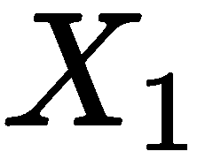和 ，我们想知道这两个图像是相似还是不相似。如下图所示，我们将图像 馈给网络
，我们想知道这两个图像是相似还是不相似。如下图所示，我们将图像 馈给网络 图像 馈给网络
图像 馈给网络 。这两个网络的作用是为输入图像生成嵌入(特征向量)。所以，我们可以使用任何能给我们嵌入的网络。由于我们的输入是一幅图像，我们可以使用卷积网络来生成嵌入:也就是说，用于提取特征。记住CNN在这里的作用只是提取特征，而不是分类。
。这两个网络的作用是为输入图像生成嵌入(特征向量)。所以，我们可以使用任何能给我们嵌入的网络。由于我们的输入是一幅图像，我们可以使用卷积网络来生成嵌入:也就是说，用于提取特征。记住CNN在这里的作用只是提取特征，而不是分类。
正如我们所知，这些网络应该具有相同的权重和架构，如果网络  是三层CNN，那么网络 也应该是三层CNN，我们必须对这两个网络使用相同的权重集。所以，网络
是三层CNN，那么网络 也应该是三层CNN，我们必须对这两个网络使用相同的权重集。所以，网络  和网络
和网络  会分别给我们输入图像和的嵌入。然后，我们将这些嵌入馈送到能量函数，它告诉我们两个输入图像有多相似。能量函数基本上是任何相似性度量，例如欧几里德距离和余弦相似性:
会分别给我们输入图像和的嵌入。然后，我们将这些嵌入馈送到能量函数，它告诉我们两个输入图像有多相似。能量函数基本上是任何相似性度量，例如欧几里德距离和余弦相似性:

暹罗网络不仅用于人脸识别，还广泛用于我们没有很多数据点的应用和需要学习两个输入之间相似性的任务。暹罗网络的应用包括签名验证、相似问题检索和对象跟踪。我们将在下一节详细研究连体网络。
暹罗网络体系结构

如上图所示，一个连体网络由两个相同的网络组成，两个网络共享相同的权重和架构。假设我们有两个输入， 和
和 。我们把输入
。我们把输入  馈给网络 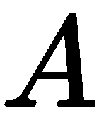，即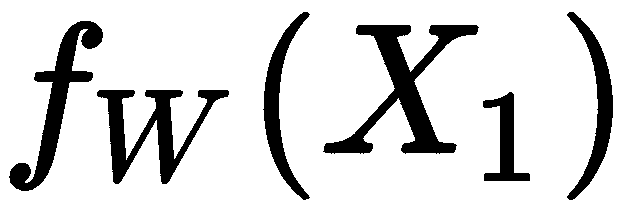，我们把输入 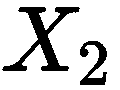馈给网络
馈给网络 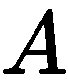，即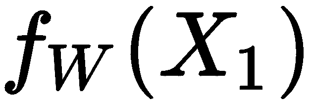，我们把输入 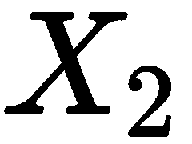馈给网络  ，即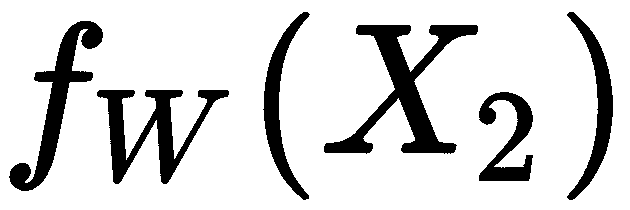。
，即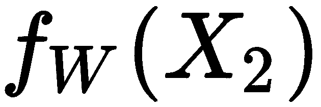。
如您所见，这两个网络具有相同的权重 ，它们将为我们的输入
，它们将为我们的输入 和
和 生成嵌入。然后，我们将这些嵌入馈送到能量函数
生成嵌入。然后，我们将这些嵌入馈送到能量函数 ，这将给出两个输入之间的相似性。它可以表示如下:
，这将给出两个输入之间的相似性。它可以表示如下:
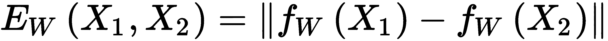
假设我们用欧几里德距离作为能量函数；如果和相似，那么的值将会很低。如果输入值不同，的值会很大。
假设你有两个句子，句子1和句子2。我们把第一句话送给电视台 ，第二句话送给电视台
，第二句话送给电视台 。假设我们的网络
。假设我们的网络 和网络
和网络 都是长短期记忆 ( LSTM )网络，它们共享相同的权重。因此，网络
都是长短期记忆 ( LSTM )网络，它们共享相同的权重。因此，网络 和网络
和网络 将分别为句子1和句子2生成嵌入。
将分别为句子1和句子2生成嵌入。
然后，我们将这些嵌入馈送到能量函数，该能量函数给我们两个句子之间的相似度分数。但是我们如何训练我们的暹罗网络呢？数据应该如何？有什么特点和标签？我们的目标函数是什么？
暹罗网络的输入应成对出现，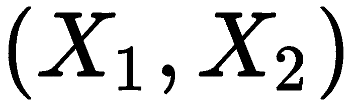，以及它们的二进制标签，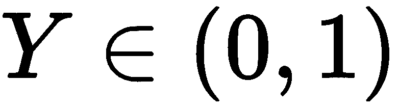，说明输入对是真对(相同)还是假对(不同)。正如您在下表中看到的，我们有成对的句子，标签暗示句子对是真实的(1)还是冒名顶替的(0):
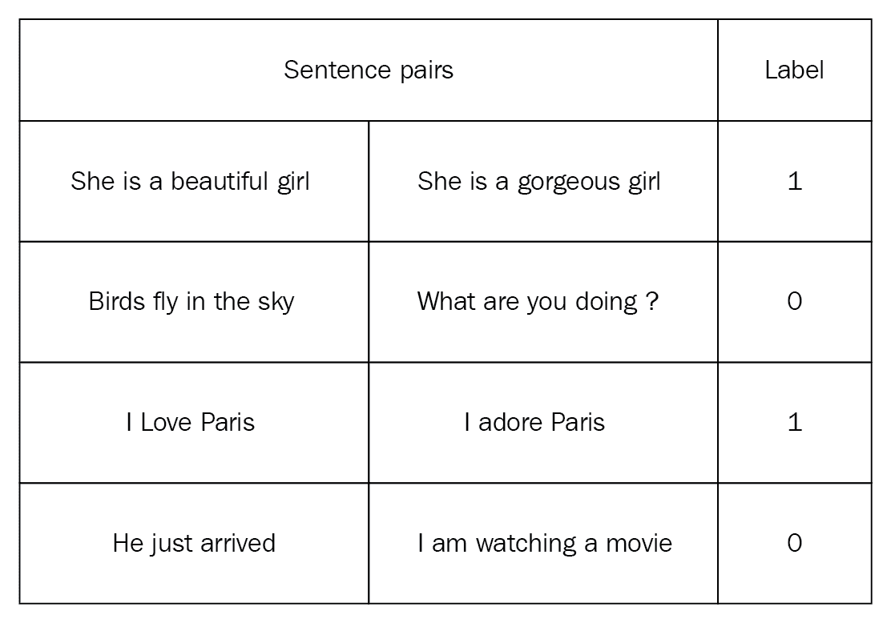
那么，我们的暹罗网络的损失函数是什么呢？
由于暹罗网络的目标不是执行分类任务，而是理解两个输入值之间的相似性，因此我们使用对比损失函数。它可以表示如下:

在前面的等式中， 的值是真正的标签，如果两个输入值相似，它将是1，如果两个输入值不相似，它将是0，并且
的值是真正的标签，如果两个输入值相似，它将是1，如果两个输入值不相似，它将是0，并且 是我们的能量函数，它可以是任何距离度量。术语余量用于保持约束，即当两个输入值不相似时，如果它们的距离大于余量，那么它们不会招致损失。
是我们的能量函数，它可以是任何距离度量。术语余量用于保持约束，即当两个输入值不相似时，如果它们的距离大于余量，那么它们不会招致损失。
原型网络
原型网络是另一种简单、有效和流行的学习算法。像暹罗网络一样，它们试图学习度量空间来执行分类。
Prototypical networks are yet another simple, efficient, and popular learning algorithm. Like siamese networks, they try to learn the metric space to perform classification.
原型网络的基本思想是创建每个类的原型表示，并基于类原型和查询点之间的距离对查询点(新点)进行分类。
假设我们有一个包含狮子、大象和狗的图像的支持集，如下图所示:
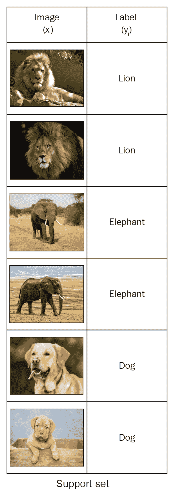
我们有三个班级(狮子、大象和狗)。现在我们需要为这三个类分别创建一个原型表示。如何才能构建这三个类的原型？首先，我们将使用一些嵌入函数来学习每个数据点的嵌入。嵌入函数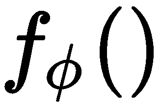可以是能够用于提取特征的任何函数。由于我们的输入是图像，我们可以使用卷积网络作为我们的嵌入函数，它将从输入图像中提取特征，如下所示:
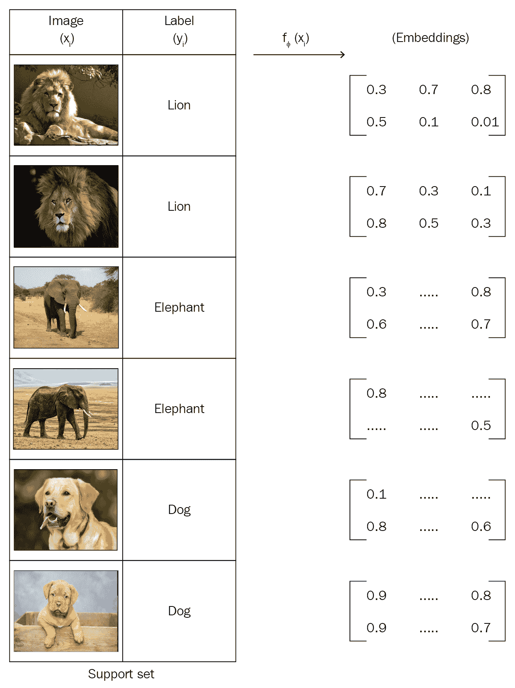
一旦我们了解了每个数据点的嵌入，我们就可以获得每个类中数据点的平均嵌入，并形成类原型，如下所示。因此，类原型基本上是类中数据点的平均嵌入:
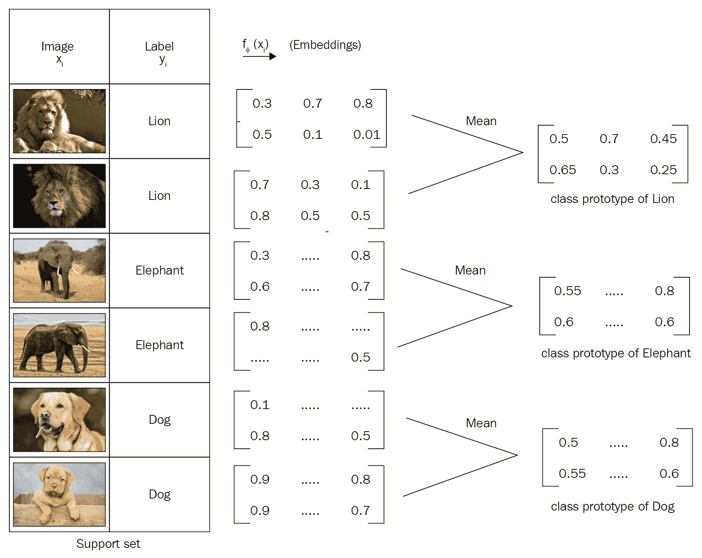
类似地，当一个新的数据点进来时，也就是我们想要预测其标签的查询点，我们将使用我们用来创建类原型的相同嵌入函数来为这个新数据点生成嵌入:也就是说，我们使用卷积网络为我们的查询点生成嵌入:
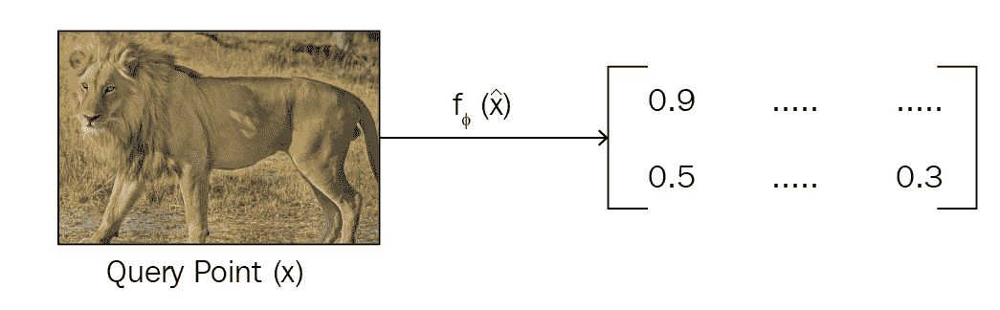
一旦我们有了查询点的嵌入，我们就比较类原型和查询点嵌入之间的距离，以找到查询点属于哪个类。我们可以使用欧几里德距离作为一种距离度量来寻找类原型和查询点嵌入之间的距离，如下所示:
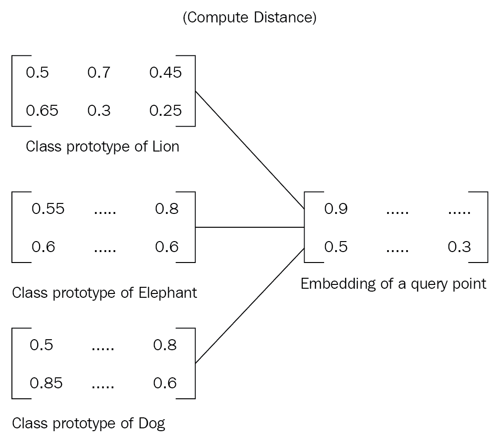
在找到类原型和查询点嵌入之间的距离后，我们将softmax应用于这个距离并获得概率。因为我们有三个类，即狮子、大象和狗，所以我们将得到三个概率。具有高概率的类将是我们的查询点的类。
因为我们希望我们的网络只从几个数据点学习，也就是说，因为我们希望执行少量学习，所以我们以同样的方式训练我们的网络。我们使用情景训练；对于每一集，我们从数据集中的每个类中随机抽取一些数据点，我们称之为支持集，我们只使用支持集而不是整个数据集来训练网络。类似地，我们从数据集中随机抽取一个点作为查询点，并尝试预测其类别。这样，我们的网络就学会了如何从数据点中学习。
原型网络的整体流程如下图所示。如您所见，首先，我们将为支持集中的所有数据点生成嵌入，并通过获取类中数据点的平均嵌入来构建类原型。我们还为我们的查询点生成嵌入。然后我们计算类原型和查询点嵌入之间的距离。我们使用欧几里得距离作为距离度量。然后我们将softmax应用到这个距离上，得到概率。
如下图所示，由于我们的查询点是一只狮子，因此狮子的概率最高，为0.9:
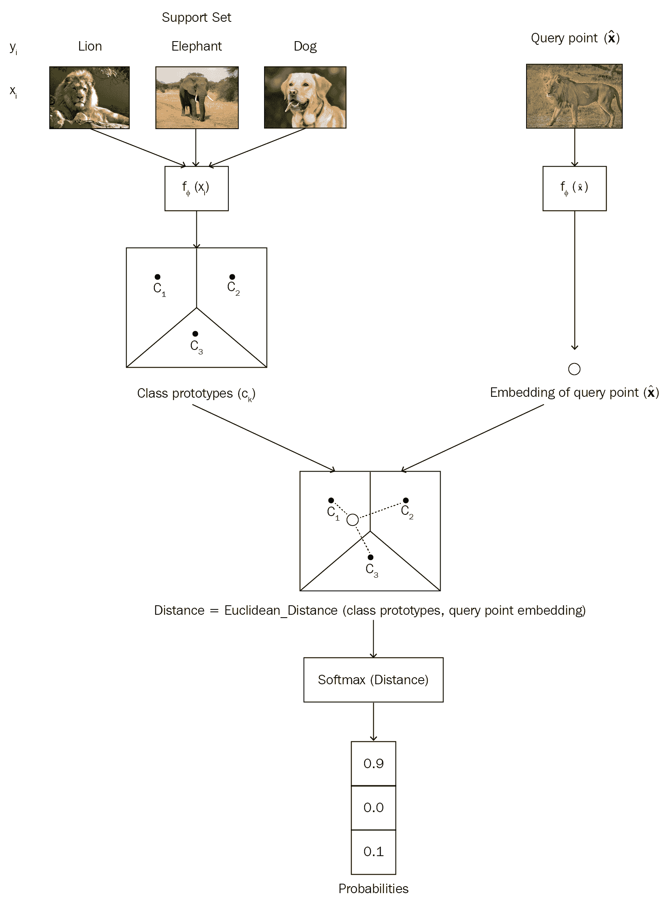
原型网络不仅用于单次/少次学习，也用于零次学习。考虑这样一种情况，我们没有每个类的数据点，但是我们有包含每个类的高级描述的元信息。
Prototypical networks are not only used for one-shot/few-shot learning, but are also used in zero-shot learning. Consider a case where we have no data points for each class but we have the meta-information containing a high-level description of each class.
在这些情况下，我们学习每个类的元信息的嵌入以形成类原型，然后用类原型执行分类。
关系网络
关系网络由两个重要的功能组成:嵌入功能，用 表示，以及关系功能，用
表示，以及关系功能，用 表示。嵌入函数用于从输入中提取特征。如果我们的输入是图像，那么我们可以使用卷积网络作为我们的嵌入函数，这将给出图像的特征向量/嵌入。如果我们的输入是文本，那么我们可以使用LSTM网络来获得文本的嵌入。比方说，我们有一个包含三个类的支持集，{狮子，大象，狗}，如下所示:
表示。嵌入函数用于从输入中提取特征。如果我们的输入是图像，那么我们可以使用卷积网络作为我们的嵌入函数，这将给出图像的特征向量/嵌入。如果我们的输入是文本，那么我们可以使用LSTM网络来获得文本的嵌入。比方说，我们有一个包含三个类的支持集，{狮子，大象，狗}，如下所示:
假设我们有一个查询图像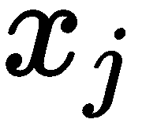，如下图所示，我们想要预测这个查询图像的类别:
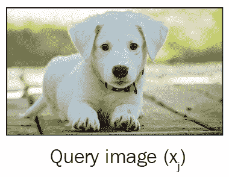
首先，我们从支持集中取出每幅图像 ，并将其传递给嵌入函数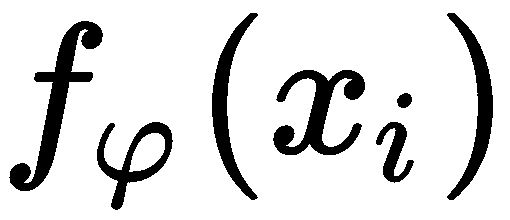以提取特征。由于我们的支持集有图像，我们可以使用卷积网络作为我们的嵌入函数来学习嵌入。嵌入函数将给出支持集中每个数据点的特征向量。类似地，我们将通过将查询图像
，并将其传递给嵌入函数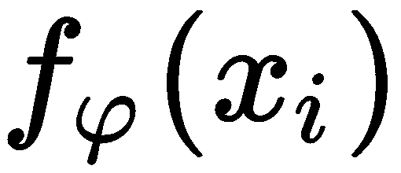以提取特征。由于我们的支持集有图像，我们可以使用卷积网络作为我们的嵌入函数来学习嵌入。嵌入函数将给出支持集中每个数据点的特征向量。类似地，我们将通过将查询图像 传递给嵌入函数
传递给嵌入函数 来学习它的嵌入。
来学习它的嵌入。
一旦我们有了支持集 和查询集
和查询集 的特征向量，我们就使用某种操作符
的特征向量，我们就使用某种操作符 将它们组合起来。这里，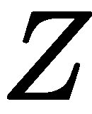可以是任意组合运算符。我们使用串联作为运算符来组合支持和查询集的特征向量:
将它们组合起来。这里，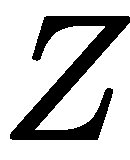可以是任意组合运算符。我们使用串联作为运算符来组合支持和查询集的特征向量:
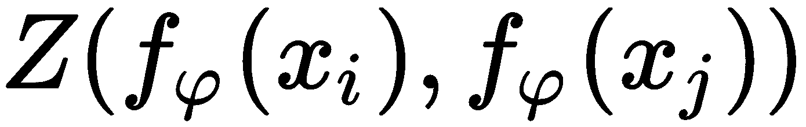
如下图所示，我们将组合支持集 和查询集
和查询集 的特征向量。但是这样结合有什么用呢？那么，它将帮助我们理解支持集中图像的特征向量是如何与查询图像的特征向量相关联的。
的特征向量。但是这样结合有什么用呢？那么，它将帮助我们理解支持集中图像的特征向量是如何与查询图像的特征向量相关联的。
在我们的例子中，它将帮助我们理解狮子的特征向量如何与查询图像的特征向量相关，大象的特征向量如何与查询图像的特征向量相关，以及狗的特征向量如何与查询图像的特征向量相关:
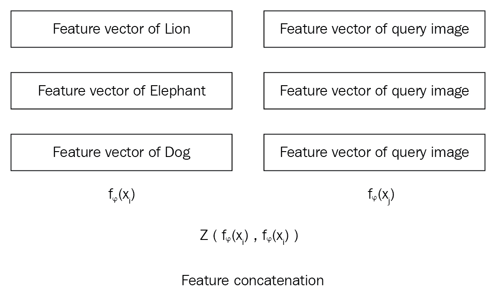
但是我们如何衡量这种相关性呢？这就是我们使用关系函数 的原因。我们将这些组合的特征向量传递给关系函数，该函数将生成范围从0到1的关系得分，表示支持集
的原因。我们将这些组合的特征向量传递给关系函数，该函数将生成范围从0到1的关系得分，表示支持集 中的样本和查询集
中的样本和查询集 中的样本之间的相似性。
中的样本之间的相似性。
下面的等式显示了我们如何计算关系网络中的关系分数 :
:
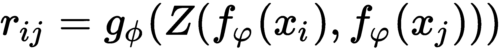
这里， 表示表示支持集合中的每个类别与查询图像之间的相似度的关系分数。因为我们在支持集合中有三个类，在查询集合中有一个图像，所以我们将有三个分数来指示支持集合中的所有三个类与查询图像是如何相似的。
表示表示支持集合中的每个类别与查询图像之间的相似度的关系分数。因为我们在支持集合中有三个类，在查询集合中有一个图像，所以我们将有三个分数来指示支持集合中的所有三个类与查询图像是如何相似的。
下图显示了一次性学习设置中关系网络的整体表示:
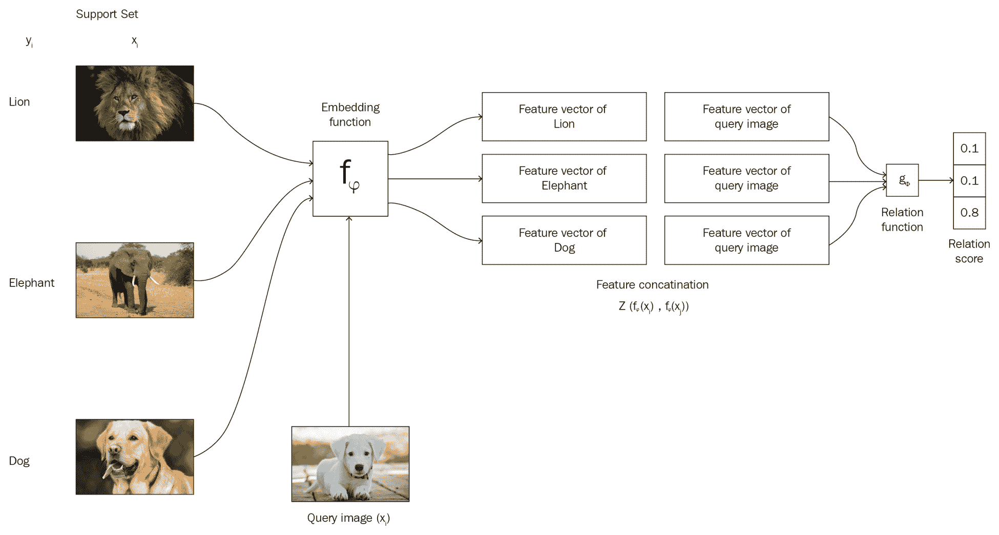
匹配网络
匹配网络是谷歌DeepMind发布的另一种简单有效的一次性学习算法。它甚至可以为数据集中未观察到的类生成标签。假设我们有一个支持集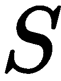，包含 个例子作为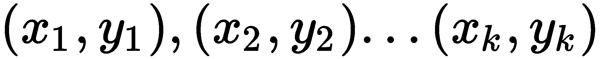。当给定一个查询点(新的未见过的例子)，
个例子作为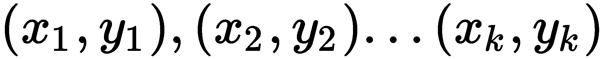。当给定一个查询点(新的未见过的例子)， ，匹配网络通过将其与支持集进行比较来预测的类别。
，匹配网络通过将其与支持集进行比较来预测的类别。
 ，其中
，其中 为参数化神经网络，
为参数化神经网络， 为查询点的预测类，为支持集。
为查询点的预测类，为支持集。 将返回属于支持集中每个类的概率。然后我们选择的类作为具有最高概率的类。但是这到底是怎么回事呢？这个概率是如何计算的？现在让我们看看。查询点的类别可以预测如下:
将返回属于支持集中每个类的概率。然后我们选择的类作为具有最高概率的类。但是这到底是怎么回事呢？这个概率是如何计算的？现在让我们看看。查询点的类别可以预测如下: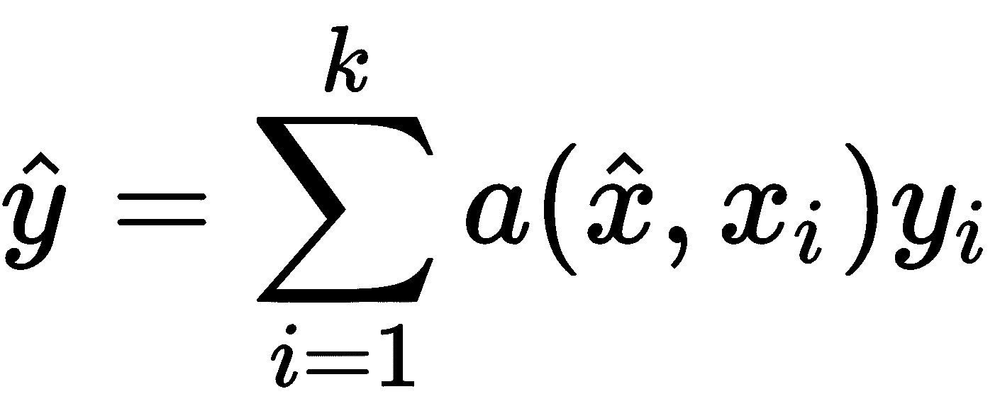
让我们来解释这个等式。这里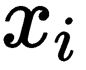和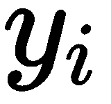是支持集的输入和标签。是查询输入，也就是我们要预测标签的输入。还有是和 之间的注意机制。但是我们如何表现注意力呢？这里，我们使用一个简单的注意机制，它是在和
之间的注意机制。但是我们如何表现注意力呢？这里，我们使用一个简单的注意机制，它是在和 之间的余弦距离上的softmax:
之间的余弦距离上的softmax:
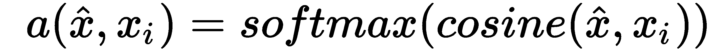
我们不能直接计算原始输入和之间的余弦距离。因此，首先，我们将学习它们的嵌入，并计算嵌入之间的余弦距离。我们使用两种不同的嵌入， 和
和 ，分别学习和的嵌入。我们将在接下来的章节中学习这两个嵌入函数
，分别学习和的嵌入。我们将在接下来的章节中学习这两个嵌入函数 和
和 是如何学习嵌入的。因此，我们可以将注意力等式改写如下:
是如何学习嵌入的。因此，我们可以将注意力等式改写如下:
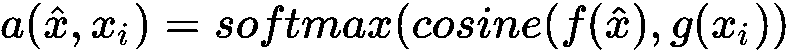
我们可以将前面的等式改写如下:
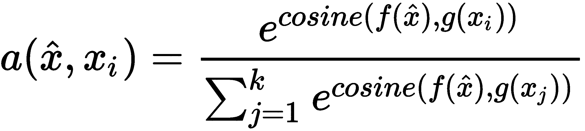
在计算了注意力矩阵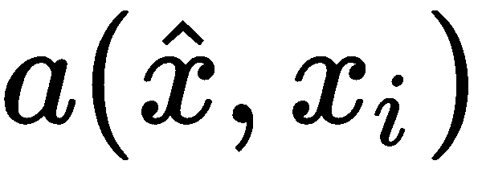之后，我们将注意力矩阵乘以支持集标签 。但是，我们如何将支持集标签与我们的注意力矩阵相乘呢？首先，我们将我们的支持集标签转换为一个热编码值，然后将它们乘以我们的关注矩阵，结果，我们得到了我们的查询点属于支持集中每个类的概率。然后我们应用 argmax 并选择
。但是，我们如何将支持集标签与我们的注意力矩阵相乘呢？首先，我们将我们的支持集标签转换为一个热编码值，然后将它们乘以我们的关注矩阵，结果，我们得到了我们的查询点属于支持集中每个类的概率。然后我们应用 argmax 并选择 作为具有最大概率值的一个。
作为具有最大概率值的一个。
We can rewrite the preceding equation as follows:
还不清楚匹配网络？看下图；你可以看到我们的支持集中有三个类(狮子、大象和狗)，我们有一个新的查询图像。
首先，我们将支持集提供给嵌入函数 并将查询图像提供给嵌入函数
并将查询图像提供给嵌入函数 ，学习它们的嵌入并计算它们之间的余弦距离，然后我们在这个余弦距离上应用softmax注意力。然后，我们将注意力矩阵乘以独热编码的支持集标签，并获得概率。接下来，我们选择作为概率最高的一个。如下图所示，查询集图像是一只大象，我们在索引1处的概率很高，因此我们将的类预测为1(大象):
，学习它们的嵌入并计算它们之间的余弦距离，然后我们在这个余弦距离上应用softmax注意力。然后，我们将注意力矩阵乘以独热编码的支持集标签，并获得概率。接下来，我们选择作为概率最高的一个。如下图所示，查询集图像是一只大象，我们在索引1处的概率很高，因此我们将的类预测为1(大象):
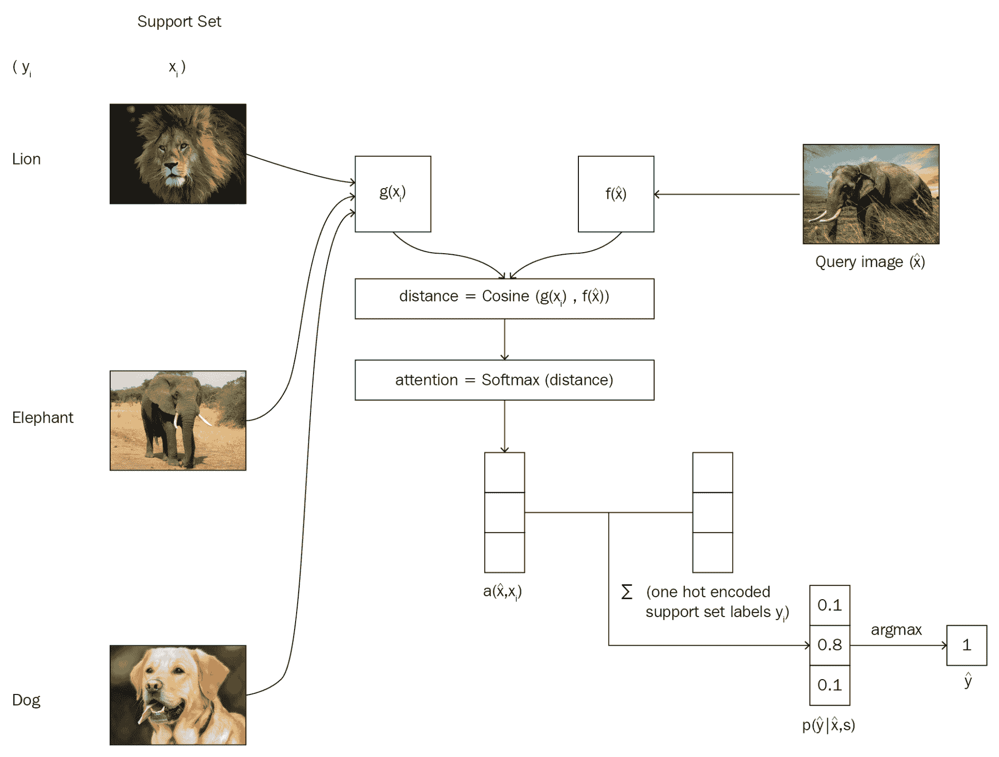
我们已经知道，我们使用两个嵌入函数和，分别用于学习和的嵌入。现在我们将看到这两个函数是如何学习嵌入的。
支持集合嵌入函数
我们使用嵌入函数 来学习支持集的嵌入。我们使用双向LSTM作为我们的嵌入函数。我们可以如下定义我们的嵌入函数:
来学习支持集的嵌入。我们使用双向LSTM作为我们的嵌入函数。我们可以如下定义我们的嵌入函数:
查询集嵌入函数
 来学习查询点
来学习查询点 的嵌入。我们使用LSTM作为我们的编码函数。除了将作为输入，我们还将传递我们的支持集嵌入的嵌入，即 g(x) ，我们还将传递一个名为 K 的参数，它定义了处理步骤的数量。让我们看看如何一步一步地计算查询集嵌入。首先，我们将初始化我们的LSTM单元:
的嵌入。我们使用LSTM作为我们的编码函数。除了将作为输入，我们还将传递我们的支持集嵌入的嵌入，即 g(x) ，我们还将传递一个名为 K 的参数，它定义了处理步骤的数量。让我们看看如何一步一步地计算查询集嵌入。首先，我们将初始化我们的LSTM单元:然后，对于处理步骤的数量，我们做如下处理:
def g(self, x_i):
forward_cell = rnn.BasicLSTMCell(32)
backward_cell = rnn.BasicLSTMCell(32)
outputs, state_forward, state_backward = rnn.static_bidirectional_rnn(forward_cell, backward_cell, x_i, dtype=tf.float32)
return tf.add(tf.stack(x_i), tf.stack(outputs))
馈送给LSTM单元来计算其嵌入:现在，我们对支持集嵌入执行softmax关注:即g_embedings。它帮助我们避免不需要的元素:
cell = rnn.BasicLSTMCell(64)
prev_state = cell.zero_state(self.batch_size, tf.float32)
我们更新previous_state并对多个处理步骤重复这些步骤，K:
for step in xrange(self.processing_steps):
计算f_embeddings的完整代码如下:
output, state = cell(XHat, prev_state)
h_k = tf.add(output, XHat)
匹配网络的结构
匹配网络的整体流程如下图所示，与我们之前看到的图像不同。你可以看到支持集 和查询集
和查询集 是如何分别通过嵌入函数
是如何分别通过嵌入函数 和
和 计算出来的。
计算出来的。
content_based_attention = tf.nn.softmax(tf.multiply(prev_state[1], g_embedding))
r_k = tf.reduce_sum(tf.multiply(content_based_attention, g_embedding), axis=0)
如您所见，嵌入函数 将查询集和支持集嵌入作为输入:
将查询集和支持集嵌入作为输入:
prev_state = rnn.LSTMStateTuple(state[0], tf.add(h_k, r_k))
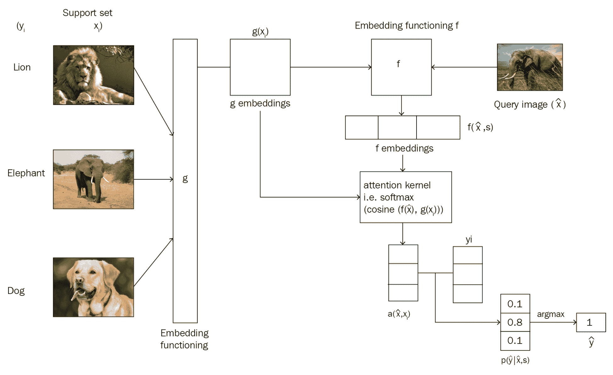
def f(self, XHat, g_embedding):
cell = rnn.BasicLSTMCell(64)
prev_state = cell.zero_state(self.batch_size, tf.float32)
for step in xrange(self.processing_steps):
output, state = cell(XHat, prev_state)
h_k = tf.add(output, XHat)
content_based_attention = tf.nn.softmax(tf.multiply(prev_state[1], g_embedding))
r_k = tf.reduce_sum(tf.multiply(content_based_attention, g_embedding), axis=0)
prev_state = rnn.LSTMStateTuple(state[0], tf.add(h_k, r_k))
return output
摘要
我们从理解什么是k-shot学习开始这一章。我们了解到，在n向k-shot学习中，n向意味着我们的数据集中的类的数量，k-shot意味着我们在每个类中的数据点的数量；支持集和查询集相当于训练集和测试集。然后我们探索了暹罗网络。我们学习了连体网络如何使用相同的网络来学习两个输入的相似性。
Congratulations again for learning all of the important and popular deep learning algorithms! Deep learning is an interesting and very popular field of AI that has revolutionized the world. Now that you've finished reading the book, you can start exploring various advancements in deep learning and start experimenting with various projects. Learn and deep learn!
在本章的最后，我们学习了匹配网络，以及它如何对支持集和查询集使用不同的嵌入函数来对图像进行分类。
深度学习是人工智能领域最有趣的分支之一。现在你已经了解了各种深度学习算法，你可以开始建立深度学习模型，创建有趣的应用程序，也可以为深度学习研究做出贡献。
问题
让我们通过回答以下问题来评估从本章学到的知识:
什么是少投学习？
什么是支持集和查询集？
定义能量函数。
To learn more about how to learn from a small number of data points, check out Hands-On Meta Learning with Python by Sudharsan Ravichandiran, published by Packt publishing available at, https://www.packtpub.com/big-data-and-business-intelligence/hands-meta-learning-python.